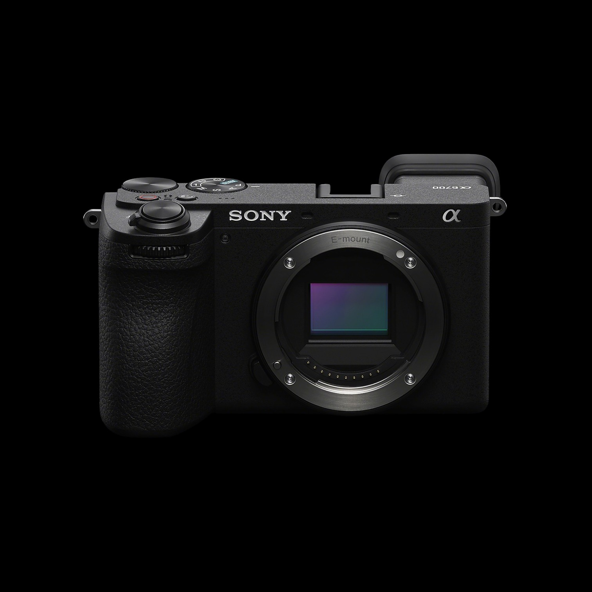
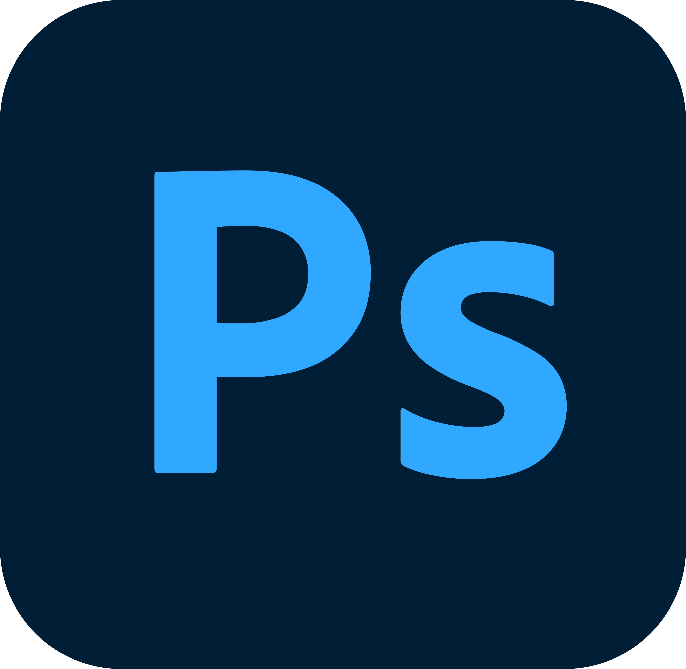
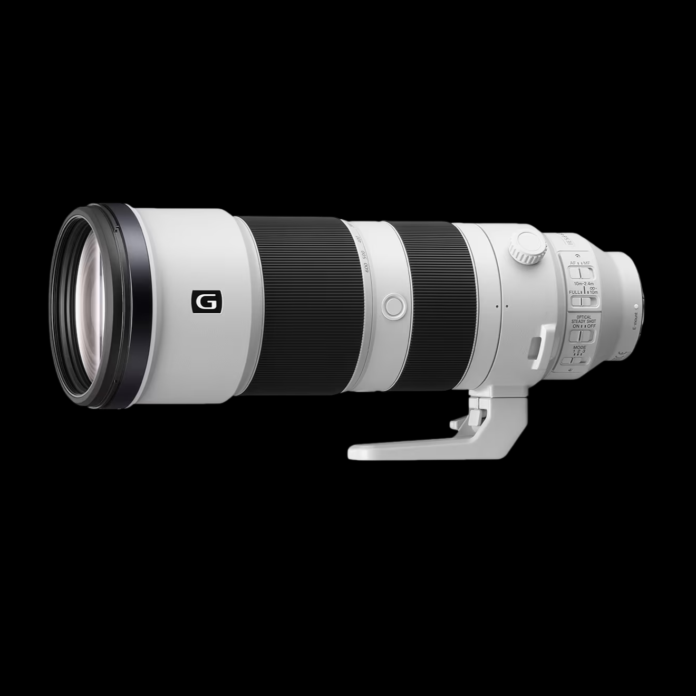
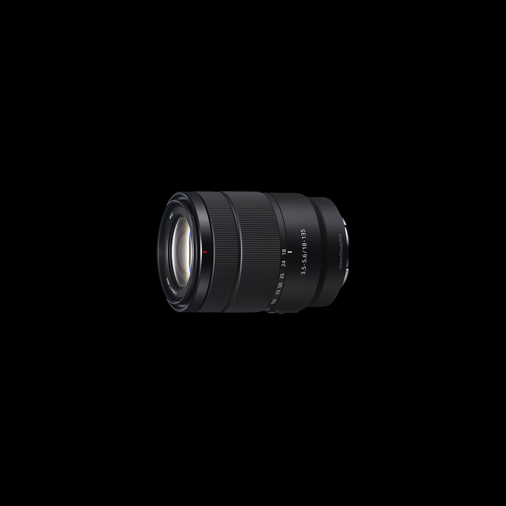
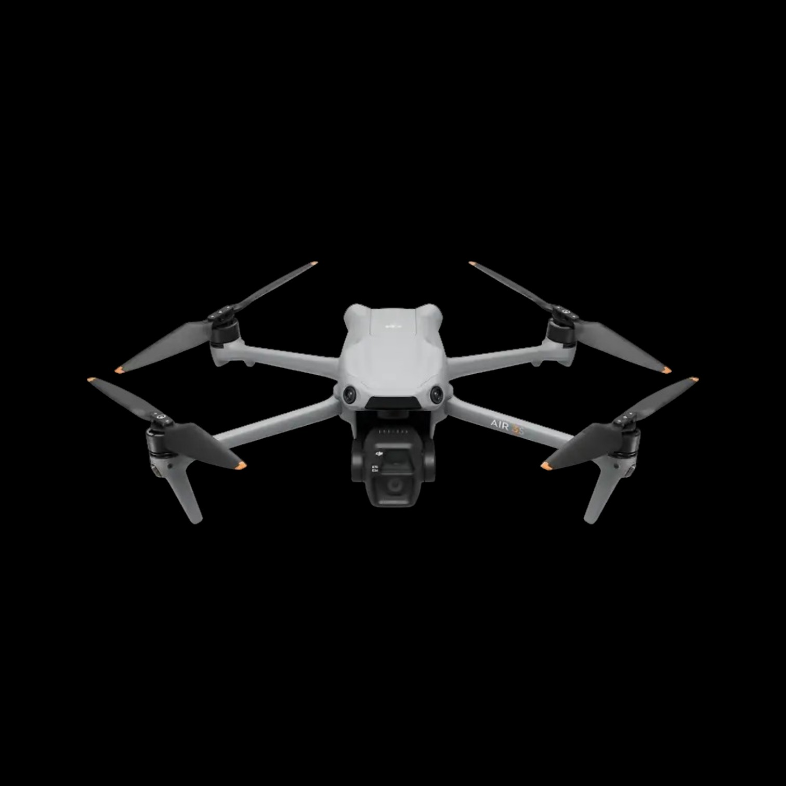
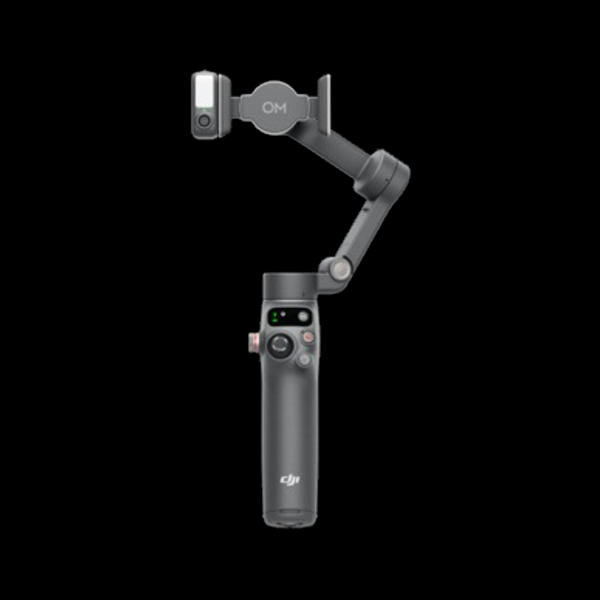
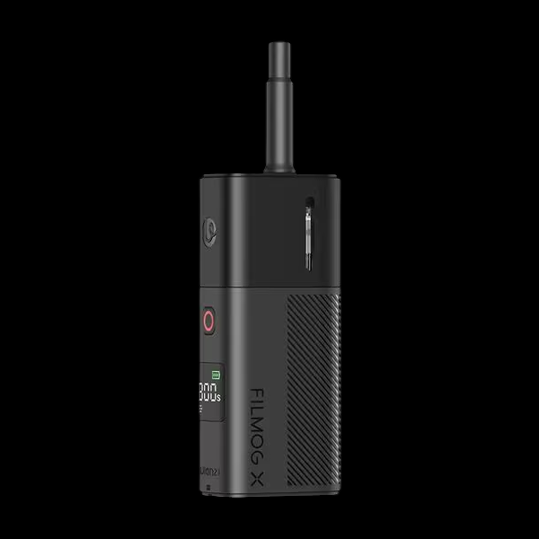
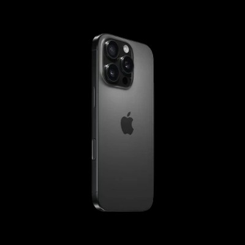
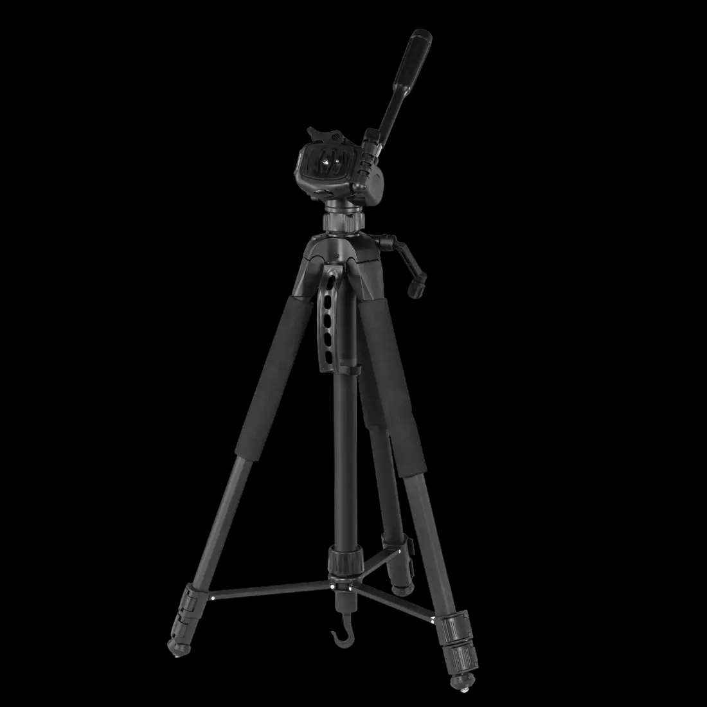

Filmmaker · Mediamatiker · Schweiz
Über mich
Hallo, ich bin Aurelio.
Ich komme aus der Schweiz und bin Mediamatiker mit einer grossen Leidenschaft für Film, Fotografie und kreative Projekte.
Was als Idee beginnt, wird bei mir schnell zu einer Geschichte. Ich liebe es, aus einem einfachen Gedanken etwas Visuelles zu machen – vom ersten Konzept über die Kamera und den Schnitt bis zum fertigen Film.
Neben dem Filmemachen fotografiere ich, fliege Drohne und setze eigene digitale Projekte um. Mich interessiert besonders, wie Bilder, Musik, Bewegung und Gestaltung zusammenspielen und so eine bestimmte Stimmung entstehen lassen.
Für mich geht es nicht nur darum, etwas zu produzieren. Es geht darum, Momente festzuhalten, Geschichten zu erzählen und Ideen sichtbar zu machen.
Schau dich gern um und lass dich von meinen Projekten inspirieren.
Skills
Videografie
Drohnen fliegen
Fotografie
Adobe



Mein Weg
2018 - Kindheit
Mit dem Klavier spielen habe ich 2018 angefangen, als ich 8 Jahre alt war. Auch Videos und Fotos aufzunehmen, hat mir schon damals viel Freude bereitet.
2020 - Lego Family Studio
Während des Lockdowns habe ich zusammen mit meiner Schwester den YouTube-Kanal «Lego Family Studio» gegründet und wir haben gemeinsam eigene Stop-Motion videos mit LEGO-Figuren erstellt.
Fotografie & Drohne
Erste Kurzfilme
Aus den ersten Experimenten wurde eine echte Leidenschaft: Ich begann, eigene Storys zu schreiben und als cinematische Kurzfilme umzusetzen – unter anderem RUN.
August 2026 - Lehre als Mediamatiker
Start der Ausbildung – Vertiefung in Design, Webentwicklung und digitalen Projekten wie URBNVIBE.
Heute
Laufend neue Projekte – von Kurzfilmen über Fotografie bis zu Webprojekten wie dieser Seite hier.
Hobbys
KREATIVE SEITE
Die Kamera ist für mich nie nur Werkzeug fürs Filmemachen – auch privat habe ich sie meistens dabei, um unterwegs Fotos festzuhalten. Und wenn ich mal keinen Bildschirm vor mir habe, sitze ich gerne am Klavier oder am Schlagzeug, einfach um den Kopf freizubekommen.
AKTIVE SEITE
Neben der Kamera bin ich auch sportlich unterwegs: Im Verein spiele ich regelmässig Billard, dazu kommt hin und wieder eine Partie Ping-Pong. Wenn sich die Gelegenheit bietet, suche ich aber auch den etwas grösseren Adrenalinkick und springe von einer Klippe ins Wasser.
Equipment

Sony 200-600mm

Sony 18-135mm

DJI Air 3S

DJI OM8

Ulanzi Filmog X

iPhone 16 Pro
